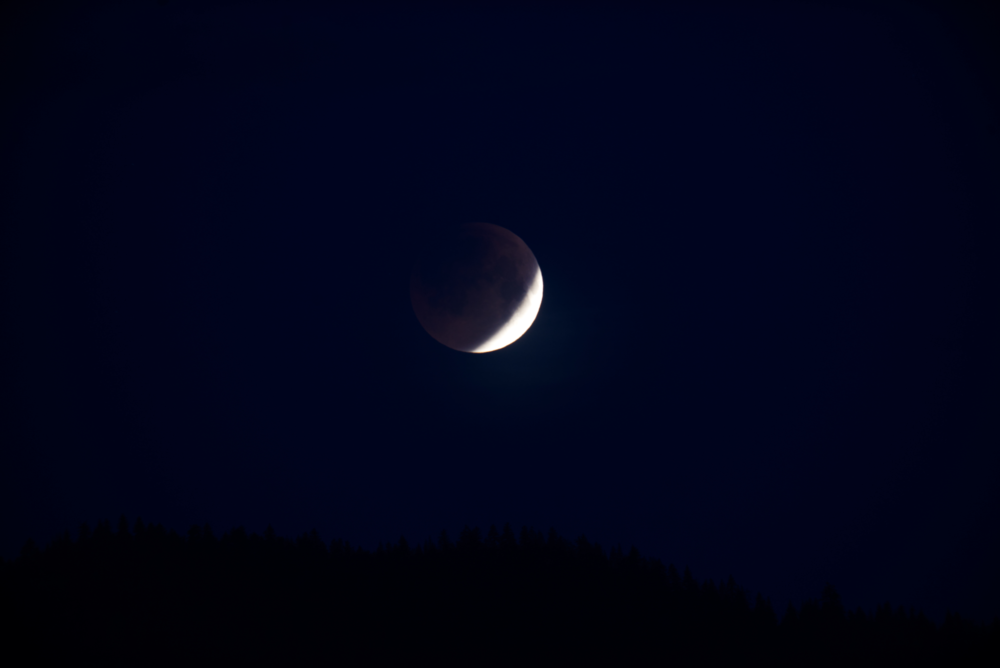
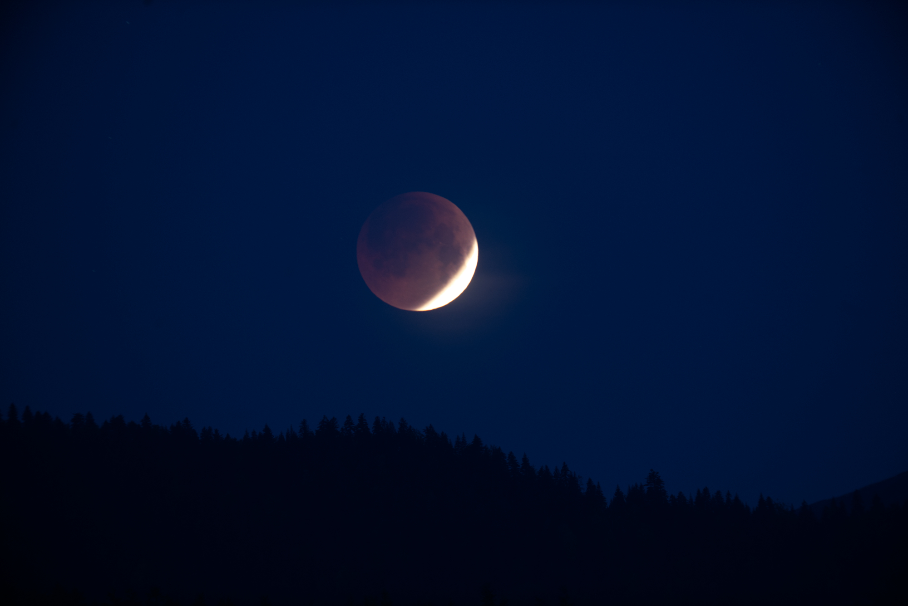
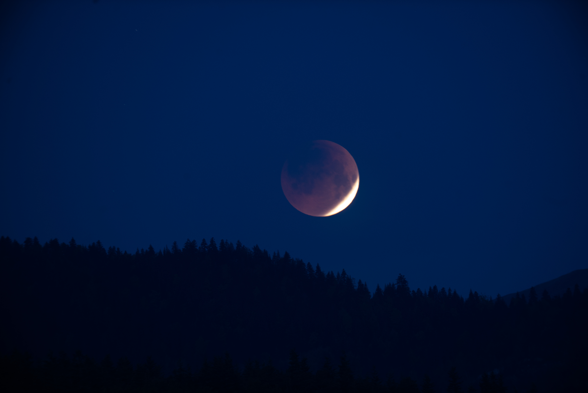
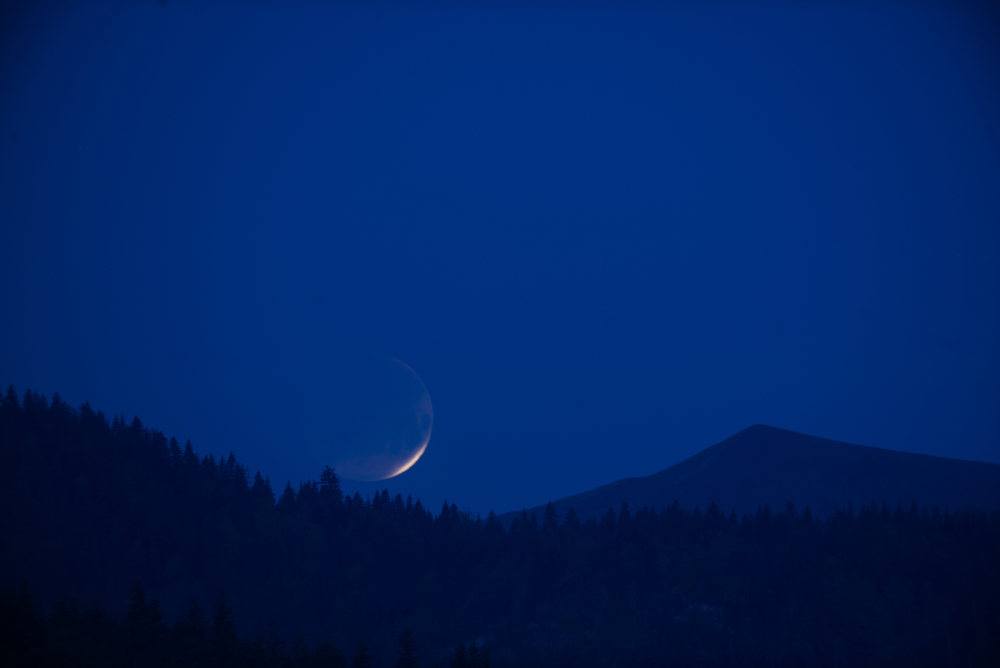
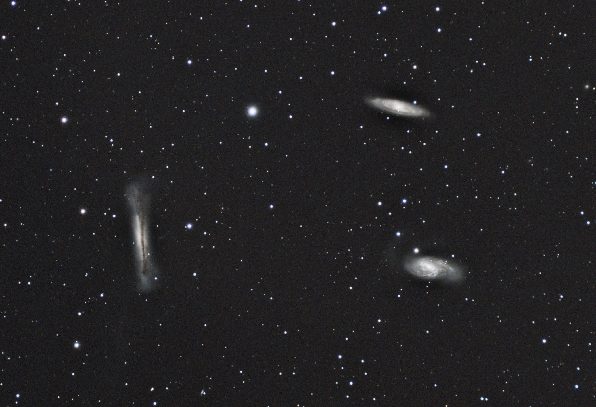
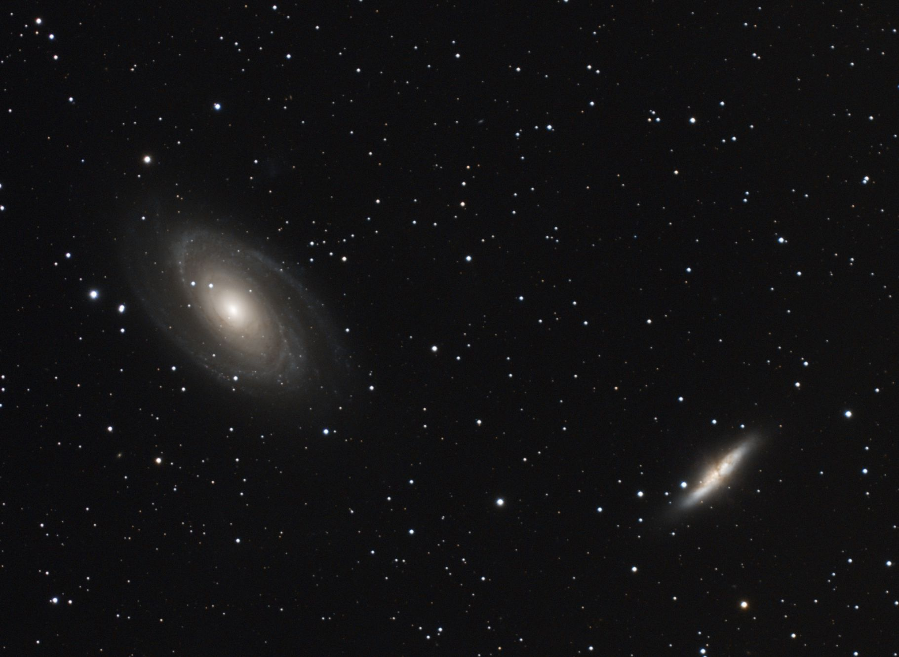

M31
2023, Oct 3

M31: Andromeda Galaxy
Nikkor 180mm@F4, ASI533MC, 48x300sec
AP600 mount with TeenAstro
UV/IR Filter
PixInsight
This Nikkor lens is pretty good, but it leaves blue halos around bright stars. I need to find out how to get rid of them.
Lunar Eclipse - 16 may 2022
2022, May 16
Borg 90FL@F5.6, Nikon D750, 1 to 2 second exposures




Leo Triplet
2022, Apr 28

M65, M66 and NGC3628: Leo Triplet
Borg 90FL@F4, ASI533MC, 24x300sec
UV/IR Filter
PixInsight
Bode's Galaxies
2022, Apr 17

M81 and M82: Bode's Galaxies
Borg 90FL@F4, ASI533MC, 24x300sec
UV/IR Filter
PixInsight
Archive
- M31
- Lunar Eclipse - 16 may 2022
- Leo Triplet
- Bode's Galaxies
- Markarian's Chain
- M45
- NGC 7822
- Cold morning
- Testing lightbox
- Heart Nebula
- NGC 6992 - Eastern Veil Nebula
- M33
- M16
- NGC 7635
- Dew Heater Controller
- IC 5146
- Reinforced pier for Telescope
- Summer Milky Way
- Box for TeenAstro mount controller
- NGC4565
- Morning Planets
- Wooden pier for Telescope
- NGC 2244 - Rosette Nebula
- Moonlight over Obiou
- Astro-Physics AP600 mount